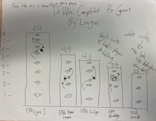

Which Teams in Europe's Top 5 Leagues Complete the Most Successful Take-Ons?
In my creation of this project, I aimed to determine whether the English Premier League deserves to be making double the revenue of the next most profitable league in world football. In order to do this, I compared the top five leagues in the world to determine which league is most entertaining and interesting to watch. One of the metrics I focued on was successful Take-Ons. Looking back on this chart now, I believe it would have been more effective to account for a 'per game' basis rather than the course of the season. This would make the data more digestable with smaller numbers. It would also account for different leagues playing different amounts of matches compared to each other. This is an edit that I made in my creative data visualization because I feel it is a cleaner and more accurate way to represent the data.
In creating this specific visualization, I focused on the Take-Ons metric specifically as I feel that successfully dribbling past opponents is representative of good quality dribling and good quality defending. In my Datawrapper chart, I used colors that are used to represent each league in their branding. I also broke it down to averages by team as averages by league would make an insanely large graphic that could bore readers.
In my creative data visualization I decided to change the metrics to a per game basis as I mentioned above. I also incorporated the concept of a a defender being placed at the marker for each singular unit. This I feel will show the viewers exactly how many defenders respective leagues dribble past per game which is easily visually understandable. I also included a sketch of an attacker weaving through the defenders in each column to further clarify this point.
